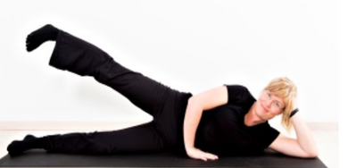

Understøttende øvelser
Øvelser der understøtter din behandling og din gode holdning Strækøvelserne udføres hver dag, styrkeøvelserne 3-5 gange pr. uge. Strækøvelserne til nakken holdes 5 til 10 minutter ad gangen og udføres morgen og aften. Styrkeøvelserne gentages 10-15 gange (alt efter hvor let du finder øvelsen), herefter holdes der 30 sekunders pause og der foretages et sæt mere. I alt udføres 3 sæt med 10-15 gentagelser. Hvis du mærker en smerte, der ikke blot er ømhed, når øvelsen gøres, stoppes der med at udføres øvelsen.
Gå til:
Nakkestræk
Styrkeøvelse 1
Styrkeøvelse 2
Styrkeøvelse 3
Styrkeøvelse 4
Styrkeøvelse 5
Nakkestræk

Stræk 1
Tag en vandflaske eller lign. og vikl et håndklæde om flasken.
Læg dig på gulvet med flasken under den nederste del af
nakken, hvor den”buler ud” nederst nede.
Lad hovedet falde tilbage og kig skråt bagud op i loftet.
Luk øjnene og lad hovedet hvile tungt ned på gulvet i
10 minutter, morgen og aften.
Det giver et fantastisk stræk af nakken, hjælper den gode
nakkekurve og modvirker de mange foroverbøjede aktiviteter,
vi har i løbet af dagen.
OBS! Lav enten stræk 1 ELLER stræk 2.

Stræk 2
Læg dig med hovedet ud over en bord-, sofa- ellermadraskant,
og lad det falde så langt bagover som muligt.
Lig her 10 minutter morgen og aften.
Denne øvelse vil, som den forrige øvelse, hjælpe nakkekurven
og give et fantastisk godt stræk af nakken.
OBS! Man kan føle ubehag og svimmelhed ved denne øvelse. Hvis dette er tilfældet lægges hovedet lidt længere ind på sengen eller ovenstående øvelse udføres i stedet.
Styrkeøvelse
Øvelse 1:"Y-W-T-L": Her bruges 4 forskellige delstillinger.
Alle delstillinger holdes 3-5 sekunder. Til sidst slippes mave og hage, og armene hænger ned langs kroppen. Hold en lille pause og ryst eventuelt kroppen, før øvelsen udføres igen. Gentag i alt 3-5 gange.
OBS! Husk at trække vejret, mens du laver øvelsen.
"Y"
1. Stå med let spredte ben og strakte arme, så hele
kroppen danner et "Y".
Lav dobbelthager og forestil dig, at der mellem
skulderbladene sidder en tennisbold du klemmer om.
Spænd i maven, så navlen trækkes ind mod rygsøjlen.
"W"
2. Bøj lidt i armene, så de danner et "W" og saml igen
skulderbladene om tennisbolden, blot lidt længere
nede nu.
Mave og hage er fortsat inde.

"T"
3. Armene strækkes ud til siden, så kroppen danner et "T".
Klem stadigvæk om tennisbold og hold mave og hage inde.
"L"
4. Albuerne klemmes nu ind mod kroppens sider, og underarmene peger ud til siden, så armene danner et "L".
Øvelse 2

Stå på alle fire og find neutralstillingen uden at spænde i
nakken.
Sug nu maven ind mod rygsøjlen (så maven er ”flad”) og løft
det ene ben og den modsatte arm, til de er i forlængelse af
kroppen.
Gå langsomt tilbage til udgangspositionen og gentag med
modsattearm og ben.
Variation for de øvede:
Øvelsen kan gøres liggende på en stor bold eller med en fuld
vandflaske stående på lænden uden at den falder ned. Disse
udgaver vil give en god udfordring af balanceevnen.
Øvelse 3

Lig fladt på maven med armene ned langs siden og panden i gulvet.

Løft nu hovedet og armene op fra gulvet, så du prøver at samle skulderbladene på ryggen.

Løft så til sidst begge strakte ben op fra gulvet. Hold stillingen 2-3 sekunder og sænk langsomt arme og ben til udgangspositionen.
Øvelse 4
Lig med bøjede ben, og fødderne i gulvet.
Løft fødderne op fra gulvet, så lårene står lodret og underbenene er parallelle med gulvet
Lav nu en mavebøjning, så hovedet og skulderblade løftes fra gulvet. Hold stillingen 2-3 sek. Gå langsomt til udgangspositionen igen.
Husk at spænde op i maven og trække navlen ned mod
rygsøjlen. Hænderne støtter hovedet, undgå at trække i
nakken.
ØVET: Sænk skiftevis et ben mod gulvet, samtidig med
mave/hoved løftes.
Øvelse 5
Lig på siden med bøjede ben og hovedet støttende på hånden elleren pude. Hælen på det øverste ben vendes op mod loftet. Dette ben løftes nu opad med hælen op mod loftet. Hold stillingen i 2-3 sekunder, og sænk benet ned til gulvet igen. Hold resten af kroppen helt i ro, mens du udfører øvelsen. OBS! For at øvelsen skal træne de væsentlige muskler i balden, er det VIGTIGT, at hælen peger opad, når øvelsen laves!